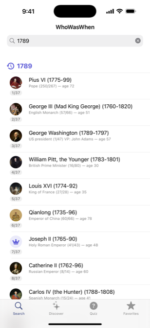
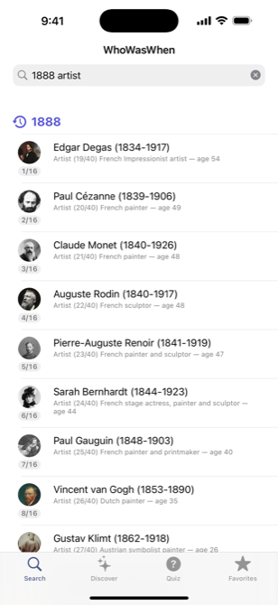
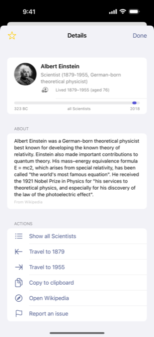
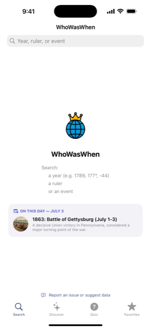
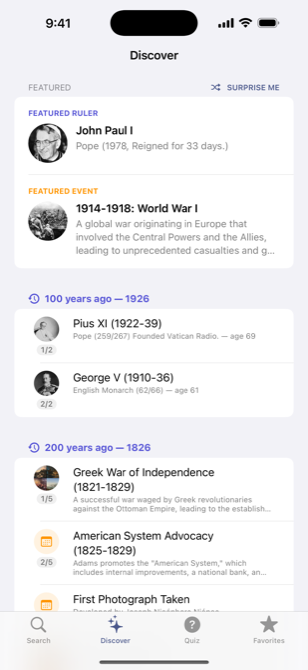
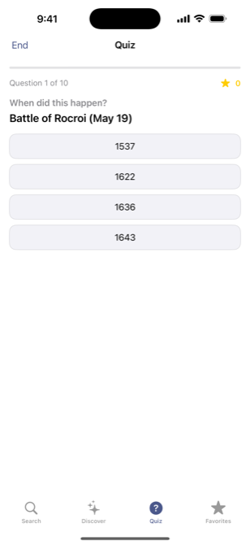
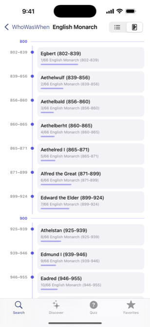

Answer “who ruled in this year?” in an instant — kings, popes, consuls and presidents, joined by the artists, writers, and scientists who lived alongside them.

A single search box, three ways to ask, and instant answers — even offline.
Type a year to see who ruled it — and how old each of them was right then. Wildcards like 177* match a decade, ranges like 1500-1600, a minus sign for BC, e.g. -44.
Find a person by name across every reign and title — accent- and case-insensitive, so napoleon finds Napoléon. Portraits and Wikipedia summaries load right in the app.
History's most famous artists, composers, writers, scientists, and philosophers — 1888 artist finds van Gogh at 35, painting alongside Monet and Degas.
Look up historical events by name and see exactly when they happened and what surrounded them.
The search screen greets you with an event that happened on today's date — a tap away from its full story.
A featured ruler and event every visit (shuffle for more), plus what happened 100, 200, 300… years ago.
Endless multiple-choice trivia generated from the data — Who was Pope in 1500? When was van Gogh born? Rulers, events, notable people, or any title; best scores tracked, confetti included.
Every holder of a title — all the Popes, all the English Monarchs — as a list or a scrollable visual timeline with century markers.
Save any ruler or event to your own collection; it persists across launches, no account needed.
Travel to the start or end year of any reign or event and keep exploring — one tap moves you through time.
The full history database ships inside the app, so search, quiz, and timelines are local and immediate — no network required.
Read-only and account-free. WhoWasWhen collects no data and tracks nothing.
The same fast, no-friction search whether you ask with a year, a name, or an event.






One box understands all of these.
1789177*1500-1600-441789 france1888 artistnapoleonfrench revolution